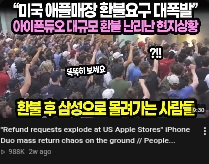
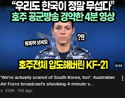
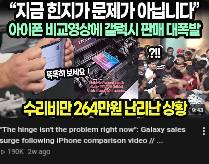
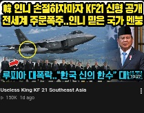
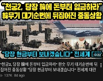

제목: 8년 만에 돌아와 월즈 찢음🔥 《 2026 월드 챔피언십 결승전 오프닝무대》 K/DA 소연·미연 해외반응 리액션 썸네일: 페이커 없는 월즈 아칼리가 캐리했다 / 2026월즈 결승 오프닝 무대 / KDA 소연 미연 해외반응 리액션
문구 길이(공백 제외) · 제목 48자 · 썸네일 15자 / 13자 / 14자
재현 순서 · 첫 구절에서 인물·사건 공개 → 사진에서 표정이나 사건이 보이는 영역 확보 → 썸네일 하단에 결과·반응 배치.
공연·리액션형 · 월즈 15/13/14자. 붓글씨 상단 분홍 #FB3276 / 연두 #9EF91E · 청록 띠 #19F7F7 · 주황 하단. 예시: ‘8년 만에 돌아와 월즈 찢음’. 《추격자》처럼 반응을 강조할 때는 중앙 빨강 NO!! #F6140D 한 번. 참교육 은백색 #E4E5E5 및 회색 #CDCDCD.
인물·현장형 · 흰색 제목, 민트 #8CFFC2 보조, 노랑 #FEFC10 하단. 캡처 기준 글자 높이 17/12/15~16px. 현장 인물 옆에 ‘똑똑히 보세요’와 ‘?!!’를 작은 흰 글씨·검정 외곽선으로 배치. 예시: ‘프랑스는 왜 한국처럼 못하나?’
뉴스·합성형 · 노랑 #FFEC0B 두 줄(13~16px), 청록 #0ADAFF 하단(11~12px). 분할 사진 중앙에는 비교할 피사체, 필요할 때 원·화살표. 예시: ‘한한령 해제에 중국은 들썩이고, 일본은…’
폰트는 재현 후보. 정선아리랑혼체 · G마켓 산스 Bold · 잘난체 고딕
캡처에 날짜와 조회수가 보이는 1일 이상 사례 중 일평균 조회수 순. 주·월 표시는 7일·30일로 근사했다. 캡처 2·3은 채널명이 보이지 않아 화면 그룹으로 구분했다. 제목은 표시 언어, 썸네일은 판독 가능한 주요 문구이며 …는 잘린 부분이다.
제목만 1. 8년 만에 돌아와 월즈 찢음🔥 《 2026 월드 챔피언십 결승전 오프닝무대》 K/DA 소연·미연 해외반응 리액션 2. “한국에 이런 배우가 있었다고?” 원빈 액션에 놀란 외국인들🔥 《아저씨》 최신 해외반응 리액션 3. 꿀알바2화] 어이가 없는데 계속 보게 된다🔥 《꿀알바》 2화 해외반응 리액션 4. 한국 스릴러의 매운맛 제대로 본 외국인들😱《추격자》 해외반응 리액션 5. 아칼리 폼 미쳤다.. K/DA가 돌아왔다🔥 FIRESTARTER 소연 미연 해외반응 리액션 6. “한국 관객 미쳤다” 화사 무대에 놀란 외국인들😱 화사 싸이흠뻑쇼 해외반응 리액션 7. 외국인들도 인정한 한국영화 명작 《공동경비구역 JSA》 해외반응 리액션 8. [Episode 1] Dopamine MAX from Episode 1🔥 Korean John Cena “True Education” Episode 1 Foreign React… 9. 이게 로맨스라고?🔥 《엽기적인 그녀》 해외반응 리액션 10. [Part.1] K드라마 보고 우는 외국인 100명 모아봤습니다😭 해외반응 리액션 모음
썸네일 문구만 1. 페이커 없는 월즈 아칼리가 캐리했다 / 2026월즈 결승 오프닝 무대 / KDA 소연 미연 해외반응 리액션 2. 이 배우 다른 영화도 보고 싶어! / 아저씨 최신 해외반응 리액션 3. 뭘 보고 있는지 모르겠는데 눈을 못 떼겠다 / 꿀알바 / 해외반응 리액션 2화 4. 18년 된 한국영화 보고 충격받은 외국인들 / NO!! / 추격자 해외반응 리액션 5. 자동 미리보기로 원래 썸네일 문구 판독 불가 6. 한국 떼창에 놀란 외국인들 / 싸이흠뻑쇼 SUMMERSWAG 2026 / 화사 해외반응 리액션 7. 26년 된 한국 영화에 놀라는 외국인들 / 공동경비구역 JSA / 해외반응 리액션 8. 해외반응 1화 / 코리안 존 시나 / 참교육 해외반응 리액션 9. 20년 전 한국 로코에 충격받은 외국인들 / 엽기적인그녀 해외반응 리액션 10. 외국인 100명 오열 / 한국 영화·드라마 / 슬픈장면 해외반응 리액션 모음
제목: 8년 만에 돌아와 월즈 찢음🔥 《 2026 월드 챔피언십 결승전 오프닝무대》 K/DA 소연·미연 해외반응 리액션 썸네일: 페이커 없는 월즈 아칼리가 캐리했다 / 2026월즈 결승 오프닝 무대 / KDA 소연 미연 해외반응 리액션
문구 길이(공백 제외) · 제목 48자 · 썸네일 15자 / 13자 / 14자
재현 순서 · 첫 구절에서 인물·사건 공개 → 사진에서 표정이나 사건이 보이는 영역 확보 → 썸네일 하단에 결과·반응 배치.
제목: “한국에 이런 배우가 있었다고?” 원빈 액션에 놀란 외국인들🔥 《아저씨》 최신 해외반응 리액션 썸네일: 이 배우 다른 영화도 보고 싶어! / 아저씨 최신 해외반응 리액션
문구 길이(공백 제외) · 제목 41자 · 썸네일 13자 / 12자
재현 순서 · 첫 구절에서 인물·사건 공개 → 사진에서 표정이나 사건이 보이는 영역 확보 → 썸네일 하단에 결과·반응 배치.
제목: 꿀알바2화] 어이가 없는데 계속 보게 된다🔥 《꿀알바》 2화 해외반응 리액션 썸네일: 뭘 보고 있는지 모르겠는데 눈을 못 떼겠다 / 꿀알바 / 해외반응 리액션 2화
문구 길이(공백 제외) · 제목 33자 · 썸네일 17자 / 3자 / 9자
재현 순서 · 첫 구절에서 인물·사건 공개 → 사진에서 표정이나 사건이 보이는 영역 확보 → 썸네일 하단에 결과·반응 배치.
제목: 한국 스릴러의 매운맛 제대로 본 외국인들😱《추격자》 해외반응 리액션 썸네일: 18년 된 한국영화 보고 충격받은 외국인들 / NO!! / 추격자 해외반응 리액션
문구 길이(공백 제외) · 제목 30자 · 썸네일 18자 / 4자 / 10자
재현 순서 · 첫 구절에서 인물·사건 공개 → 사진에서 표정이나 사건이 보이는 영역 확보 → 썸네일 하단에 결과·반응 배치.

제목: 아칼리 폼 미쳤다.. K/DA가 돌아왔다🔥 FIRESTARTER 소연 미연 해외반응 리액션 썸네일: 자동 미리보기로 원래 썸네일 문구 판독 불가
문구 길이(공백 제외) · 제목 41자 · 썸네일 18자
재현 순서 · 첫 구절에서 인물·사건 공개 → 사진에서 표정이나 사건이 보이는 영역 확보 → 썸네일 하단에 결과·반응 배치.
제목: “한국 관객 미쳤다” 화사 무대에 놀란 외국인들😱 화사 싸이흠뻑쇼 해외반응 리액션 썸네일: 한국 떼창에 놀란 외국인들 / 싸이흠뻑쇼 SUMMERSWAG 2026 / 화사 해외반응 리액션
문구 길이(공백 제외) · 제목 35자 · 썸네일 11자 / 19자 / 9자
재현 순서 · 첫 구절에서 인물·사건 공개 → 사진에서 표정이나 사건이 보이는 영역 확보 → 썸네일 하단에 결과·반응 배치.
제목: 외국인들도 인정한 한국영화 명작 《공동경비구역 JSA》 해외반응 리액션 썸네일: 26년 된 한국 영화에 놀라는 외국인들 / 공동경비구역 JSA / 해외반응 리액션
문구 길이(공백 제외) · 제목 32자 · 썸네일 16자 / 9자 / 7자
재현 순서 · 첫 구절에서 인물·사건 공개 → 사진에서 표정이나 사건이 보이는 영역 확보 → 썸네일 하단에 결과·반응 배치.

제목: [Episode 1] Dopamine MAX from Episode 1🔥 Korean John Cena “True Education” Episode 1 Foreign React… 썸네일: 해외반응 1화 / 코리안 존 시나 / 참교육 해외반응 리액션
문구 길이(공백 제외) · 제목 84자 · 썸네일 6자 / 6자 / 10자
재현 순서 · 첫 구절에서 인물·사건 공개 → 사진에서 표정이나 사건이 보이는 영역 확보 → 썸네일 하단에 결과·반응 배치.
제목: 이게 로맨스라고?🔥 《엽기적인 그녀》 해외반응 리액션 썸네일: 20년 전 한국 로코에 충격받은 외국인들 / 엽기적인그녀 해외반응 리액션
문구 길이(공백 제외) · 제목 24자 · 썸네일 17자 / 13자
재현 순서 · 첫 구절에서 인물·사건 공개 → 사진에서 표정이나 사건이 보이는 영역 확보 → 썸네일 하단에 결과·반응 배치.
제목: [Part.1] K드라마 보고 우는 외국인 100명 모아봤습니다😭 해외반응 리액션 모음 썸네일: 외국인 100명 오열 / 한국 영화·드라마 / 슬픈장면 해외반응 리액션 모음
문구 길이(공백 제외) · 제목 39자 · 썸네일 9자 / 8자 / 13자
재현 순서 · 첫 구절에서 인물·사건 공개 → 사진에서 표정이나 사건이 보이는 영역 확보 → 썸네일 하단에 결과·반응 배치.
제목만 1. “Why can’t France be like Korea?” The 3-minute video about Korea that hit #1 in French ratings / … 2. “Refund requests explode at US Apple Stores”: iPhone Duo mass return chaos on the ground / People… 3. [Full Version] Apple stores across the U.S. in chaos: iPhone Duo mass return crisis // Situatio… 4. “South Korea swept everything in 20 years”: The reason the world calls Korea an absolute predator… 5. “The U.S. has fallen for Korean Kimchi-making”: U.S. grocery stores in a frenzy as cabbage shipme… 6. “We’re actually scared of South Korea, too”: Australian Air Force broadcasts shocking 4-minute v… 7. “Apple should at least be half as good as Samsung”: Chaos in local markets on Day 3 of iPhone Duo… 8. “The hinge isn’t the problem right now”: Galaxy sales surge following iPhone comparison video // … 9. “Korea has completely spoiled foreigners”: The current situation in Korea, overflowing with forei… 10. “Korean horror sweeps the world” Takes #1 in 18 countries on its first day of release / The world…
썸네일 문구만 1. 프랑스는 왜 한국처럼 못하나 / 프랑스 시청률 1위 찍은 한국 3분영상 / 한국특집방송 나가자 유럽인들 발칵 2. 미국 애플매장 환불요구 대폭발 / 아이폰듀오 대규모 환불 난리난 현지상황 / 환불 후 삼성으로 몰려가는 사람들 3. 미국전역 모든 애플매장 무너졌다 / 아이폰 듀오 대규모 반품사태 발칵 / 생각보다 훨씬 심각한 상황 4. 한국이 20년만에 싹 쓸어갔다 / 전세계가 한국을 절대적 포식자라 부르는 이유 / 이래서 한국이 무섭습니다 5. 오전 7시부터 싹 다 쓸어갔다 / 김장철 배추 쟁탈전에 미국마트 아수라장 / 생각보다 훨씬 심각한 상황 6. 우리도 한국이 정말 무섭다 / 호주 공군방송 경악한 4분 영상 / 호주전체 압도해버린 KF-21 7. XX 애플은 삼성 반만 따라가라 / 아이폰듀오 반품 3일차 난리난 현지상황 / 삼성과의 처참한 격차가 드러났다 8. 지금 힌지가 문제가 아닙니다 / 아이폰 비교영상에 갤럭시 판매 대폭발 / 수리비만 264만원 난리난 상황 9. 한국이 외국인들 싹 다 망쳐놨다 / 외국인 순례자들로 미어터진 한국 현재상황 / 단체로 걷는 장면에 경악한 미국방송 10. 한국식 공포가 전세계 싹 다 쓸었다 / 공개첫날 18개국 1위 난리난 상황 / K-공포드라마에 홀려버린 전세계
제목: “Why can’t France be like Korea?” The 3-minute video about Korea that hit #1 in French ratings / … 썸네일: 프랑스는 왜 한국처럼 못하나 / 프랑스 시청률 1위 찍은 한국 3분영상 / 한국특집방송 나가자 유럽인들 발칵
문구 길이(공백 제외) · 제목 80자 · 썸네일 12자 / 16자 / 15자
재현 순서 · 첫 구절에서 인물·사건 공개 → 사진에서 표정이나 사건이 보이는 영역 확보 → 썸네일 하단에 결과·반응 배치.

제목: “Refund requests explode at US Apple Stores”: iPhone Duo mass return chaos on the ground / People… 썸네일: 미국 애플매장 환불요구 대폭발 / 아이폰듀오 대규모 환불 난리난 현지상황 / 환불 후 삼성으로 몰려가는 사람들
문구 길이(공백 제외) · 제목 82자 · 썸네일 13자 / 17자 / 14자
재현 순서 · 첫 구절에서 인물·사건 공개 → 사진에서 표정이나 사건이 보이는 영역 확보 → 썸네일 하단에 결과·반응 배치.

제목: [Full Version] Apple stores across the U.S. in chaos: iPhone Duo mass return crisis // Situatio… 썸네일: 미국전역 모든 애플매장 무너졌다 / 아이폰 듀오 대규모 반품사태 발칵 / 생각보다 훨씬 심각한 상황
문구 길이(공백 제외) · 제목 81자 · 썸네일 14자 / 14자 / 11자
재현 순서 · 첫 구절에서 인물·사건 공개 → 사진에서 표정이나 사건이 보이는 영역 확보 → 썸네일 하단에 결과·반응 배치.
제목: “South Korea swept everything in 20 years”: The reason the world calls Korea an absolute predator… 썸네일: 한국이 20년만에 싹 쓸어갔다 / 전세계가 한국을 절대적 포식자라 부르는 이유 / 이래서 한국이 무섭습니다
문구 길이(공백 제외) · 제목 83자 · 썸네일 13자 / 19자 / 11자
재현 순서 · 첫 구절에서 인물·사건 공개 → 사진에서 표정이나 사건이 보이는 영역 확보 → 썸네일 하단에 결과·반응 배치.
제목: “The U.S. has fallen for Korean Kimchi-making”: U.S. grocery stores in a frenzy as cabbage shipme… 썸네일: 오전 7시부터 싹 다 쓸어갔다 / 김장철 배추 쟁탈전에 미국마트 아수라장 / 생각보다 훨씬 심각한 상황
문구 길이(공백 제외) · 제목 83자 · 썸네일 12자 / 17자 / 11자
재현 순서 · 첫 구절에서 인물·사건 공개 → 사진에서 표정이나 사건이 보이는 영역 확보 → 썸네일 하단에 결과·반응 배치.

제목: “We’re actually scared of South Korea, too”: Australian Air Force broadcasts shocking 4-minute v… 썸네일: 우리도 한국이 정말 무섭다 / 호주 공군방송 경악한 4분 영상 / 호주전체 압도해버린 KF-21
문구 길이(공백 제외) · 제목 84자 · 썸네일 11자 / 13자 / 14자
재현 순서 · 첫 구절에서 인물·사건 공개 → 사진에서 표정이나 사건이 보이는 영역 확보 → 썸네일 하단에 결과·반응 배치.

제목: “Apple should at least be half as good as Samsung”: Chaos in local markets on Day 3 of iPhone Duo… 썸네일: XX 애플은 삼성 반만 따라가라 / 아이폰듀오 반품 3일차 난리난 현지상황 / 삼성과의 처참한 격차가 드러났다
문구 길이(공백 제외) · 제목 79자 · 썸네일 13자 / 17자 / 14자
재현 순서 · 첫 구절에서 인물·사건 공개 → 사진에서 표정이나 사건이 보이는 영역 확보 → 썸네일 하단에 결과·반응 배치.

제목: “The hinge isn’t the problem right now”: Galaxy sales surge following iPhone comparison video // … 썸네일: 지금 힌지가 문제가 아닙니다 / 아이폰 비교영상에 갤럭시 판매 대폭발 / 수리비만 264만원 난리난 상황
문구 길이(공백 제외) · 제목 83자 · 썸네일 12자 / 16자 / 14자
재현 순서 · 첫 구절에서 인물·사건 공개 → 사진에서 표정이나 사건이 보이는 영역 확보 → 썸네일 하단에 결과·반응 배치.

제목: “Korea has completely spoiled foreigners”: The current situation in Korea, overflowing with forei… 썸네일: 한국이 외국인들 싹 다 망쳐놨다 / 외국인 순례자들로 미어터진 한국 현재상황 / 단체로 걷는 장면에 경악한 미국방송
문구 길이(공백 제외) · 제목 86자 · 썸네일 13자 / 18자 / 15자
재현 순서 · 첫 구절에서 인물·사건 공개 → 사진에서 표정이나 사건이 보이는 영역 확보 → 썸네일 하단에 결과·반응 배치.
제목: “Korean horror sweeps the world” Takes #1 in 18 countries on its first day of release / The world… 썸네일: 한국식 공포가 전세계 싹 다 쓸었다 / 공개첫날 18개국 1위 난리난 상황 / K-공포드라마에 홀려버린 전세계
문구 길이(공백 제외) · 제목 80자 · 썸네일 14자 / 15자 / 15자
재현 순서 · 첫 구절에서 인물·사건 공개 → 사진에서 표정이나 사건이 보이는 영역 확보 → 썸네일 하단에 결과·반응 배치.
제목만 1. Useless King KF 21 Southeast Asia 2. Chinese people go wild over the lifting of the Hallyu ban, but Japan faces a shocking ‘Anti-Korea… 3. World Stunned by Korea’s Unveiled 600-Ton New Weapon: Why the U.S. Military Is Shocked and Japan… 4. Spain: “Adopt South Korea’s KF-21 for 6th Gen”. Massive twist as KF-21 production model flight s… 5. “Let’s sign the Hyunmoo + L-SAM contract immediately”: A massive twist, global chaos ensues… 6. The King of Utility: South Korea’s KF-21 7. (Full Version) South Korea’s Surprise Nuclear Submarine Announcement Followed by New Weapon… 8. “What on earth is South Korea preparing?” From nuclear subs to sea-based Chunmoo… 9. King of Utility: South Korean Fighter Jet Special 10. 천궁2, 당장 韓에 돈부터 입금하라 한국 무기 대기순번에 뒤집어진 중동상황…
썸네일 문구만 1. 韓 인니 손절하자마자 KF21 신형 공개 / 전세계 주문폭주..인니 믿은 국가 멘붕 / 루피아 대폭락..한국 신의 한수 2. 한한령 해제에 난리난 중국인들 반응 / 그런데 日은 반일령 경악, 대반전 3. 韓 600톤 신무기 공개에 전세계 발칵 / 美 크게 경악하고 日 망연자실한 이유 / 상상초월한 韓무기 클래스 4. 스페인 韓KF21 6세대 도입하라 / KF21 연합 기동에 난리난 유럽 내부상황 / 韓KF21 진짜 의도는 이것 5. 한국과 L-SAM 당장 계약하자 대반전 / 韓미사일 쟁탈전에 전세계 아수라장 / 550km 적진 핀셋타격 6. 韓전투기 4세대 동시 기동 광경 / 中日크게 당황..인니는 긴급상황 / 세계 5위 전력..전세계 KF21 요구 7. 한국 핵잠 폭탄발표뒤 신무기 공개 / 韓에 당장 현금보내라 난리난 상황 / 韓공장 1년치 통째로 구매 8. 한국 대체 뭘 준비하고 있는거냐 / 핵잠+바다 위 천무 기술발표 中 발칵 / 韓 빠르게 캐나다 되돌수 9. KF21과 FA50 옆 정체불명 기체 / 한국군 작심 기동에 난리난 주변국 / 韓전투기 도착에 환호한 국가 10. 천궁2, 당장 韓에 돈부터 입금하라 / 韓무기 대기순번에 뒤집어진 중동상황 / 당장 현금부터 보내겠습니다

제목: Useless King KF 21 Southeast Asia 썸네일: 韓 인니 손절하자마자 KF21 신형 공개 / 전세계 주문폭주..인니 믿은 국가 멘붕 / 루피아 대폭락..한국 신의 한수
문구 길이(공백 제외) · 제목 28자 · 썸네일 17자 / 17자 / 14자
재현 순서 · 첫 구절에서 인물·사건 공개 → 사진에서 표정이나 사건이 보이는 영역 확보 → 썸네일 하단에 결과·반응 배치.

제목: Chinese people go wild over the lifting of the Hallyu ban, but Japan faces a shocking ‘Anti-Korea… 썸네일: 한한령 해제에 난리난 중국인들 반응 / 그런데 日은 반일령 경악, 대반전
문구 길이(공백 제외) · 제목 82자 · 썸네일 15자 / 14자
재현 순서 · 첫 구절에서 인물·사건 공개 → 사진에서 표정이나 사건이 보이는 영역 확보 → 썸네일 하단에 결과·반응 배치.

제목: World Stunned by Korea’s Unveiled 600-Ton New Weapon: Why the U.S. Military Is Shocked and Japan… 썸네일: 韓 600톤 신무기 공개에 전세계 발칵 / 美 크게 경악하고 日 망연자실한 이유 / 상상초월한 韓무기 클래스
문구 길이(공백 제외) · 제목 82자 · 썸네일 16자 / 15자 / 11자
재현 순서 · 첫 구절에서 인물·사건 공개 → 사진에서 표정이나 사건이 보이는 영역 확보 → 썸네일 하단에 결과·반응 배치.

제목: Spain: “Adopt South Korea’s KF-21 for 6th Gen”. Massive twist as KF-21 production model flight s… 썸네일: 스페인 韓KF21 6세대 도입하라 / KF21 연합 기동에 난리난 유럽 내부상황 / 韓KF21 진짜 의도는 이것
문구 길이(공백 제외) · 제목 82자 · 썸네일 15자 / 18자 / 12자
재현 순서 · 첫 구절에서 인물·사건 공개 → 사진에서 표정이나 사건이 보이는 영역 확보 → 썸네일 하단에 결과·반응 배치.

제목: “Let’s sign the Hyunmoo + L-SAM contract immediately”: A massive twist, global chaos ensues… 썸네일: 한국과 L-SAM 당장 계약하자 대반전 / 韓미사일 쟁탈전에 전세계 아수라장 / 550km 적진 핀셋타격
문구 길이(공백 제외) · 제목 79자 · 썸네일 17자 / 15자 / 11자
재현 순서 · 첫 구절에서 인물·사건 공개 → 사진에서 표정이나 사건이 보이는 영역 확보 → 썸네일 하단에 결과·반응 배치.

제목: The King of Utility: South Korea’s KF-21 썸네일: 韓전투기 4세대 동시 기동 광경 / 中日크게 당황..인니는 긴급상황 / 세계 5위 전력..전세계 KF21 요구
문구 길이(공백 제외) · 제목 34자 · 썸네일 13자 / 15자 / 17자
재현 순서 · 첫 구절에서 인물·사건 공개 → 사진에서 표정이나 사건이 보이는 영역 확보 → 썸네일 하단에 결과·반응 배치.

제목: (Full Version) South Korea’s Surprise Nuclear Submarine Announcement Followed by New Weapon… 썸네일: 한국 핵잠 폭탄발표뒤 신무기 공개 / 韓에 당장 현금보내라 난리난 상황 / 韓공장 1년치 통째로 구매
문구 길이(공백 제외) · 제목 81자 · 썸네일 14자 / 14자 / 11자
재현 순서 · 첫 구절에서 인물·사건 공개 → 사진에서 표정이나 사건이 보이는 영역 확보 → 썸네일 하단에 결과·반응 배치.

제목: “What on earth is South Korea preparing?” From nuclear subs to sea-based Chunmoo… 썸네일: 한국 대체 뭘 준비하고 있는거냐 / 핵잠+바다 위 천무 기술발표 中 발칵 / 韓 빠르게 캐나다 되돌수
문구 길이(공백 제외) · 제목 69자 · 썸네일 13자 / 15자 / 10자
재현 순서 · 첫 구절에서 인물·사건 공개 → 사진에서 표정이나 사건이 보이는 영역 확보 → 썸네일 하단에 결과·반응 배치.

제목: King of Utility: South Korean Fighter Jet Special 썸네일: KF21과 FA50 옆 정체불명 기체 / 한국군 작심 기동에 난리난 주변국 / 韓전투기 도착에 환호한 국가
문구 길이(공백 제외) · 제목 42자 · 썸네일 16자 / 14자 / 12자
재현 순서 · 첫 구절에서 인물·사건 공개 → 사진에서 표정이나 사건이 보이는 영역 확보 → 썸네일 하단에 결과·반응 배치.

제목: 천궁2, 당장 韓에 돈부터 입금하라 한국 무기 대기순번에 뒤집어진 중동상황… 썸네일: 천궁2, 당장 韓에 돈부터 입금하라 / 韓무기 대기순번에 뒤집어진 중동상황 / 당장 현금부터 보내겠습니다
문구 길이(공백 제외) · 제목 33자 · 썸네일 15자 / 16자 / 12자
재현 순서 · 첫 구절에서 인물·사건 공개 → 사진에서 표정이나 사건이 보이는 영역 확보 → 썸네일 하단에 결과·반응 배치.
1. 프랑스 방송 속 한국 3분 영상 | 918,000회 · 5일 · 일평균 183,600회 2. 인도네시아 KF21 신형 공개 | 150,000회 · 1일 · 일평균 150,000회 3. K/DA 월즈 결승 오프닝 | 235,000회 · 3일 · 일평균 78,333회 4. 한한령 해제와 일본 반응 | 150,000회 · 2일 · 일평균 75,000회 5. 한국 600톤 신무기 공개 | 156,000회 · 3일 · 일평균 52,000회 6. 한국이 20년 만에 싹 쓸어갔다 | 131,000회 · 3일 · 일평균 43,667회 7. 스페인 KF21 도입 발언 | 170,000회 · 5일 · 일평균 34,000회 8. 미국 마트의 김장 배추 | 124,000회 · 4일 · 일평균 31,000회 9. 현궁·L-SAM 계약 | 122,000회 · 4일 · 일평균 30,500회 10. 한국 핵잠 발표 뒤 신무기 공개 | 140,000회 · 6일 · 일평균 23,333회